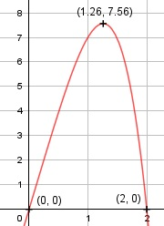

Aufgabe 53 f(x) = -x4 + 8x f'(x) = -4x3 + 8, f''(x) = -12x2, f'''(x) = -24x Definitionsbereich: -∞ < x < ∞ Wertebereich: -∞ < f(x) ≤ 7,56 (siehe Extrempunkte) Asymptoten: - Symmetrie: - Nullstellen: -x4 + 8x = 0 -x * (x3 - 8) = 0 -x = 0 | :(-1) x1 = 0 x3 - 8 = 0 | +8 x3 = 8 |∛ x2,3,4 = 2 N1(0|0), N2(2|0) Schnittpunkt mit der y-Achse: f(0) = -04 + 8 * 0 = 0 Sy(0|0) Extrempunkte: -4x3/ + 8 = 0 | - 8 -4x3/ = - 8 |*(-1) 4x3/ = 8 |:4 x3/ = 2 |√("3" &) x1 = 1,26, f(1,26) = -1,264 + 8 * 1,26 = 7,56 f''(1,26) = -12 * 1,262 < 0 --> Hochpunkt (1,26|7,56) Wendepunkt: -12x2 = 0 |:(-12) x1,2 = 0, f(0) = 0 f'''(0) = -24 * 0 = 0 --> kein Wendepunkt Graph:
